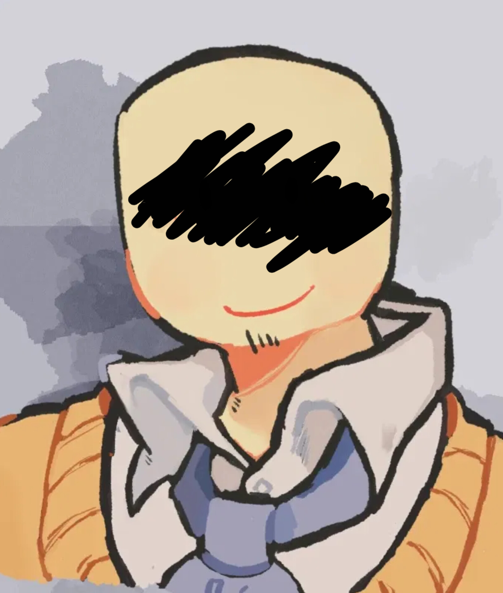
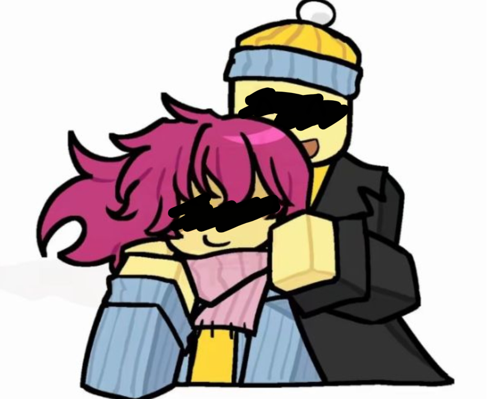
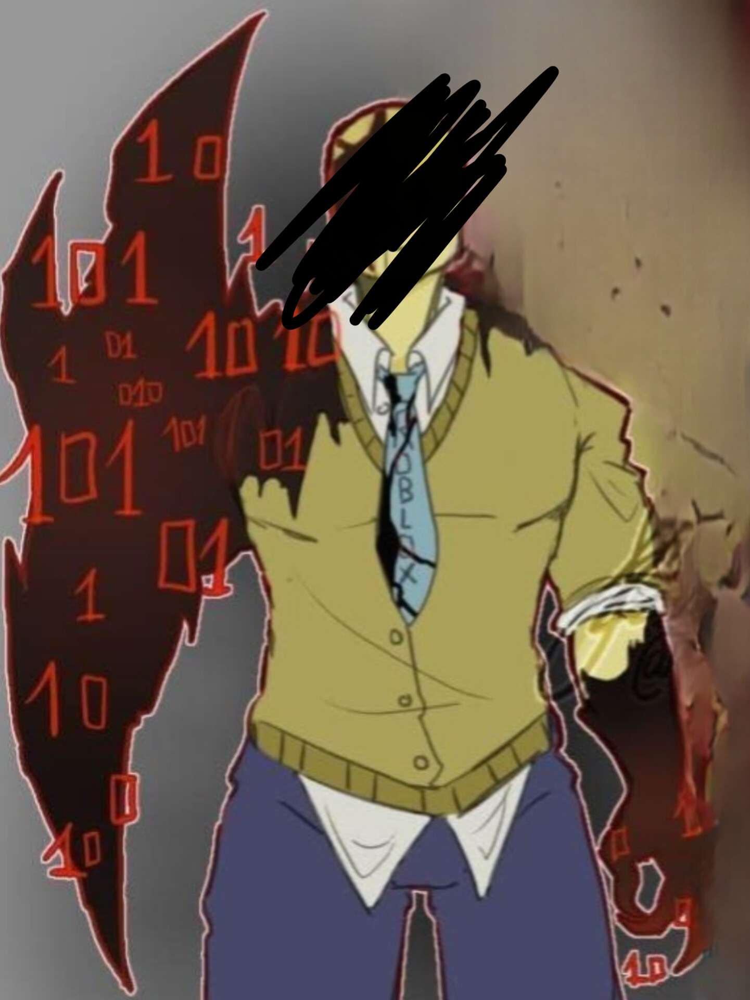

A leitura do arquivo retornou inconsistências não tratáveis.
DESEJA CONTINUAR ACESSANDO MESMO ASSIM?
◉
REGISTRO PESSOAL — JANE DOE
STATUS: NÃO AUTORIZADO · DIA 1 · ACESSO IRRESTRITO
⚠ ARQUIVO NÃO CATALOGADO◈ ORIGEM DESCONHECIDA█ LOG DE DELEÇÃO: AUSENTE⚠ NENHUM USUÁRIO AUTENTICADO◈ INTEGRIDADE COMPROMETIDA█ MONITORAMENTO ATIVO⚠ ARQUIVO NÃO CATALOGADO◈ ORIGEM DESCONHECIDA█ LOG DE DELEÇÃO: AUSENTE⚠ NENHUM USUÁRIO AUTENTICADO◈ INTEGRIDADE COMPROMETIDA█ MONITORAMENTO ATIVO
ANOMALIAS
03/08
▸ Segmento 01 — Abertura
Eu decidi registrar isso hoje, mesmo não sendo necessário. Não é parte de nenhum protocolo, ninguém solicitou e, se eu fosse seguir o padrão esperado, esse tipo de anotação nem existiria.
Ainda assim, deixar tudo apenas na minha memória não parece suficiente. Memória falha, distorce, preenche lacunas com suposições.
Isso aqui não é um relatório técnico. É só… um ponto de referência.
▸ Segmento 02 — Análise de Código Legado
Hoje fui designada para análise de código legado. Nada fora do comum. Estruturas antigas, funções abandonadas, fragmentos que sobreviveram a atualizações sucessivas sem motivo claro.
O processo é simples: identificar, validar e apagar. Limpo, direto, previsível.
Os dados vieram sem documentação adequada. Não havia histórico consistente, nem registro claro de origem. Sistemas bem mantidos deixam rastros — sempre deixam.
Aqui, esse caminho simplesmente não existe. Ou foi removido de uma forma que eu ainda não consegui identificar.
Passei as primeiras horas só observando.É um erro comum começar apagando coisas sem saber o que fazem.Deixei como estava. Comecei a mapear padrões.Estrutura, dependências, chamadas.Tudo dentro do esperado…até não estar mais.
▸ Segmento 03 — Instâncias Anômalas
Encontrei uma função marcada como deletada em versões anteriores. Nada complexo, algo pequeno, quase irrelevante. Mas ela estava ativa.
A princípio, considerei erro de sincronização. Ignorei e continuei.
Então encontrei outra.
E depois mais uma.
Todas com o mesmo padrão: registradas como removidas, sem qualquer log de reintrodução, mas presentes e funcionando normalmente. Isso já não se encaixa em falha simples.
FUNC [fn_███████] :: ESPERADO: DELETADO :: REAL: ATIVO :: LOG: <NÃO EXISTE>
FUNC [fn_███████] :: ESPERADO: DELETADO :: REAL: ATIVO :: LOG: <NÃO EXISTE>
FUNC [fn_███████] :: ESPERADO: DELETADO :: REAL: ATIVO :: LOG: <NÃO EXISTE>
não é deleção padrão — não é NULL — é como se nunca tivesse sido registrada
Afastei da tela por alguns minutos.Não por cansaço — o raciocínio não estava fechando.Quando algo não faz sentido,forçar uma conclusão só piora. Quando voltei, notei a diferença imediatamente. Não foi uma mudança grande. Nada gritante.Uma linha que eu tinha certezaque não estava ali… estava.
▸ Segmento 04 — Observação Final
Revisei o histórico local. Nada. Nenhuma alteração registrada, nenhuma atualização, nenhum processo ativo que justificasse aquilo. A linha simplesmente existia agora, como se sempre tivesse estado ali.
Passei mais tempo verificando, tentando provar que eu tinha cometido um erro de observação. Isso seria o mais lógico.
Mas quanto mais eu revisava, menos essa hipótese se sustentava.
Eu cometi um erro de observação.Provavelmente está quebrado. Existe uma diferença entre algo queestá quebrado…e algo que está se comportando deforma inesperada. Isso não parece quebrado.Parece… persistente. Vou continuar amanhã.Preciso de mais dados.
◉
REGISTRO PESSOAL — JANE DOE
STATUS: NÃO AUTORIZADO · DIA 2 · ACESSO IRRESTRITO
⚠ ARQUIVO NÃO CATALOGADO◈ ORIGEM DESCONHECIDA█ LOG DE DELEÇÃO: AUSENTE⚠ NENHUM USUÁRIO AUTENTICADO◈ INTEGRIDADE COMPROMETIDA█ MONITORAMENTO ATIVO⚠ ARQUIVO NÃO CATALOGADO◈ ORIGEM DESCONHECIDA█ LOG DE DELEÇÃO: AUSENTE⚠ NENHUM USUÁRIO AUTENTICADO◈ INTEGRIDADE COMPROMETIDA█ MONITORAMENTO ATIVO
ANOMALIAS
05/08
▸ Segmento 01 — Retorno
Retornei ao mesmo conjunto de dados hoje com a intenção de confirmar uma hipótese simples: erro de observação. Era a explicação mais segura para o que registrei ontem.
Se eu estivesse certa, então as inconsistências desapareceriam sob uma análise mais controlada. Se eu estivesse errada… isso também ficaria evidente. Em qualquer um dos casos, o resultado deveria ser conclusivo.
Não foi.
▸ Segmento 02 — Teste de Persistência
Comecei do zero. Recarreguei o ambiente, isolei os fragmentos e refiz o mapeamento completo. Mesma estrutura, mesmas dependências aparentes, mesmas funções marcadas como removidas e ainda assim presentes. Até aí, nada novo.
O problema começou quando passei a testar comportamento em tempo real. Eu não fiz nada complexo. Apenas observei como o sistema reagia a pequenas alterações locais, mudanças controladas, reversíveis.
Removi uma das funções que identifiquei ontem. Fiz isso manualmente, fora de qualquer rotina automática, para garantir que não haveria interferência de processos externos. A remoção foi concluída sem erro. Confirmei. Revisei. A função não estava mais lá.
Esperei. Não havia motivo para esperar, mas ainda assim esperei.
Após alguns minutos, atualizei o ambiente.
A função havia retornado.
OP: DELETE [fn_███████] :: STATUS: OK :: VERIFICAÇÃO: OK :: ELEMENTO REMOVIDO
WAIT t+04m12s :: REFRESH ENV ::
OP: SCAN :: ENCONTRADO [fn_███████] :: HASH: IDÊNTICO :: LOG DE RESTAURAÇÃO: <NÃO EXISTE>
não há ponto de origem — não há central — e ainda assim recompõe
Não como um duplicado, não como uma cópia residual. Era a mesma estrutura, no mesmo lugar, com o mesmo comportamento. Não havia registro de recriação, nem qualquer log indicando que algo havia sido restaurado. Simplesmente… voltou.
Repeti o processo. Dessa vez, removi duas funções diferentes, em pontos distintos do conjunto. Resultado idêntico. Ambas retornaram após atualização, novamente sem qualquer evidência de processo intermediário.
Eu não estou lidando com uma simples falha de sincronização. Isso implicaria um ponto de origem estável de onde os dados são restaurados. Aqui não há origem identificável. Não há ponto central. Ainda assim, o sistema se recompõe.
Decidi alterar em vez de remover.Modifiquei parâmetros internos de uma função.Nada estrutural. Só valores que afetariamo comportamento de execução. Por um curto período,o sistema respondeu de acordo com a mudança. Em seguida…os valores retornaram.Sem registro.
▸ Segmento 03 — Rejeição Ativa
Não é só persistência.
É rejeição ativa de alteração.
Isso implica que o sistema "sabe" qual é o estado correto… mesmo que esse estado não esteja documentado em lugar nenhum.
Eu passei mais tempo do que deveria nisso. Perdi a noção do horário em algum ponto entre as repetições. Não por descuido, mas porque o padrão começou a se tornar… consistente demais para ser ignorado.
Não há aleatoriedade aqui. Tudo que eu tentei alterar foi revertido. Tudo que eu tentei remover foi restaurado. Sempre da mesma forma, sempre sem deixar rastros.
SET param[██]=NEW :: APLICADO :: t+00m00s
STATE OBSERVADO == NEW :: t+00m47s
STATE OBSERVADO == OLD :: t+02m13s :: TRIGGER: <NÃO IDENTIFICADO>
DIFF DE ROLLBACK: 0 BYTES :: NENHUMA OPERAÇÃO REGISTRADA
Em algum momento,senti que não estava mais apenas testando. Estava sendo… observado. Isso não é uma conclusão técnica.Eu não tenho dados pra sustentar isso. Mas a sensação veio acompanhadade um detalhe que eunão consigo explicar de outra forma.
▸ Segmento 04 — Sequência Estranha
Enquanto revisava uma das estruturas, notei uma sequência de instruções que eu não reconhecia. Não fazia parte do padrão original que eu havia mapeado. Não estava lá antes.
Dessa vez, eu tenho certeza.
Eu não toquei naquilo imediatamente. Apenas observei. A sequência não fazia nada visível. Nenhuma chamada direta, nenhuma saída clara. Mas estava integrada ao restante do sistema como se sempre tivesse feito parte dele.
Afastei a interface por um momento.
Quando voltei, a sequência havia mudado. Não completamente. Apenas o suficiente para que eu percebesse que não era estática.
Eu não registrei isso em nenhum sistema oficial. Ainda não. Não sem entender melhor o que estou lidando. Se isso for interpretado como instabilidade comum, vão encerrar a análise antes que eu consiga extrair qualquer conclusão real. E eu preciso entender.
▸ Segmento 05 — Visita Inesperada
No meio disso tudo, ele apareceu.
O nome dele era John Doe.
Ele não estava envolvido diretamente na análise, mas passou pelo setor e acabou vendo minha tela aberta. Perguntou o que eu estava fazendo. Eu expliquei, de forma resumida. Disse que havia inconsistências no código legado e que eu estava tentando identificar a origem.
Ele olhou por alguns segundos.
Disse que parecia normal. Que eu provavelmente estava procurando padrão onde não tinha. Que código antigo sempre dá problema.
Depois riu. Disse para eu não perder o dia com algo que provavelmente seria descartado depois.
Eu não respondi imediatamente. Porque parte de mim considerou a possibilidade de ele estar certo.
Mas outra parte… não aceitou.
Antes de sair, ele disse que eu deveria descansar mais. Que eu estava levando isso a sério demais.
Talvez eu esteja.
Mas isso não muda o fato de que o comportamento continua sem explicação.
▸ Anexo — Identificação Visual

— John Doe, dia 2.
Quando ele saiu, voltei pra tela.A sequência que eu havia observado antes…não estava mais lá. Nenhum registro de remoção.Nenhum vestígio. Se eu não tivesse visto,não haveria prova de que existiu. Isso é o que mais me incomoda.Não é a anomalia em si.É o fato de que ela não deixa rastro.
▸ Segmento 06 — Encerramento
Eu não consigo provar nada.
Ainda.
Vou continuar amanhã. Eu preciso de algo concreto. Um padrão que não possa ser descartado.
Porque se isso continuar apenas no nível de observação… eventualmente vão assumir que o erro sou eu.
◉
REGISTRO PESSOAL — JANE DOE
STATUS: NÃO AUTORIZADO · DIA ?? · ACESSO RESTRITO
⚠ REGISTRO NÃO AUTORIZADO◈ FORA DO PROTOCOLO█ ENTRADA NÃO INDEXADA⚠ CONTEÚDO SENSÍVEL DETECTADO◈ ACESSO CRIPTOGRAFADO█ MONITORAMENTO ATIVO⚠ REGISTRO NÃO AUTORIZADO◈ FORA DO PROTOCOLO█ ENTRADA NÃO INDEXADA⚠ CONTEÚDO SENSÍVEL DETECTADO◈ ACESSO CRIPTOGRAFADO█ MONITORAMENTO ATIVO
ANOMALIAS
07/08
▸ Segmento 01 — Nota Preliminar
Eu não pretendia incluir isso aqui.
Esse registro começou como uma forma de manter controle sobre o trabalho. Um ponto fixo em meio a inconsistências. Mas ignorar certos detalhes também é uma forma de distorção, e eu já estou lidando com coisas demais que não fazem sentido para começar a omitir partes da realidade por conveniência.
▸ Segmento 02 — Retorno
Ele voltou hoje.
Não foi a primeira vez desde o último registro, mas foi a primeira vez que ele não passou direto.
O nome dele era John Doe. Ainda é, tecnicamente. Isso não mudou. Nada mudou, na verdade. Exceto… frequência. Presença. Ele começou a aparecer mais vezes no setor, mesmo sem motivo direto para isso. No começo eu não associei uma coisa à outra. Ambientes compartilhados fazem isso. Pessoas cruzam caminhos.
Mas depois deixou de parecer coincidência.
Ele parou ao meu lado enquanto euanalisava um dos fragmentos.Não comentou nada de imediato,só observou a tela por alguns segundos. Eu achei que ele iria repetir o que disse antes.Perda de tempo.Complicando algo simples. Mas não foi isso que aconteceu. Ele apontou para uma das funções.Perguntou por que aquilo estava ali. Eu expliquei.Ele não riu dessa vez.
▸ Segmento 03 — Padrão Novo
Nos dias seguintes, ele voltou. Às vezes com desculpas vagas, às vezes sem nenhuma. Começou a fazer perguntas mais específicas. Não sobre o sistema inteiro, mas sobre partes isoladas. Pequenos detalhes. Coisas que a maioria ignoraria.
Eu respondi no início apenas por hábito. Explicar processos é parte do trabalho. Mas, em algum ponto, deixou de ser só isso.
Ele não estava apenas perguntando.
Estava tentando entender.
A diferença é clara quando você presta atenção.
Nós começamos a trabalhar juntos em alguns momentos. Nada oficial. Não houve designação formal, nenhum registro que vinculasse ele ao projeto. Mas ele aparecia, puxava uma cadeira e ficava. Às vezes ajudando, às vezes só acompanhando.
O tempo começou a se organizar de forma diferente quando ele estava ali. Menos… mecânico.
Eu não notei quando isso deixou de ser incomum. Só percebi quando passou a ser esperado.
Houve um dia específico —não marquei a data, mas deveria ter —em que ficamos horas revisandoa mesma estrutura. Não porque era necessário.Porque nenhum de nós queriaencerrar aquilo ainda. Foi improdutivo. E ainda assim foi o dia mais eficienteque tive desde que comecei esse projeto.
▸ Segmento 04 — Desvio de Padrão
Ele começou a trazer coisas externas ao trabalho. Comentários aleatórios, observações que não tinham relação direta com o sistema. Eu não sou boa nesse tipo de interação. Nunca fui. Prefiro coisas que possam ser medidas, verificadas, repetidas. Conversa não entra nessa categoria.
Mas com ele… não parecia perda de tempo.
Eu comecei a responder.
Depois, comecei a iniciar.
Isso é… incomum para mim.
Os meses passaram sem que eu registrasse aqui. Não por esquecimento, mas porque o foco mudou. O trabalho continuou, as inconsistências também, mas deixaram de ser a única coisa ocupando espaço.
Eu ainda analisava, ainda testava, ainda buscava padrões. Só que agora havia interrupções. Pausas que não eram impostas, mas escolhidas.
Ele me tirava da tela com facilidade. Isso deveria ter me incomodado mais do que incomodou.
[REG. TEMPORAL AUSENTE] — INTERVALO NÃO DOCUMENTADO
ESTIMATIVA: MESES :: DADOS: INCONCLUSIVOS
COMPORTAMENTO OBSERVADO: DESVIO DE ROTINA PERSISTENTE :: ORIGEM: NÃO IDENTIFICADA
nota: padrão não corresponde a nenhum protocolo registrado
▸ Segmento 05 — O Momento
Em algum ponto, passamos a sair juntos depois do expediente. Não como algo formal. Nunca houve uma declaração clara, nenhum momento definido que marcasse "início". Foi uma progressão lenta demais para ser delimitada.
Eu tentei identificar quando isso mudou. Não consegui. Talvez não tenha mudado de uma vez. Talvez só tenha… acumulado.
Estávamos sentados, revisando algoque já não exigia revisão. Ele disse que eu pensava demais.Eu respondi que ele pensava de menos.Ele riu. Eu não. Ele continuou olhando para mimmesmo depois da resposta. Isso foi… desconfortável.Não no sentido negativo. Desconfortável porque eu não sabiao que fazer com aquilo.
Ele perguntou se eu já tinha considerado parar por um tempo. Não o projeto. Só… desacelerar. Eu disse que não fazia sentido. Ele disse que nem tudo precisa fazer sentido para valer a pena.
Eu não concordei. Mas também não argumentei.
Ficamos em silêncio por alguns segundos.
Depois ele disse meu nome.
De um jeito diferente.
Mais lento. Como se estivesse testando algo.
Eu respondi. Não lembro exatamente o que disse. Mas lembro que não parecia mais uma conversa comum.
▸ Segmento 06 — Encerramento
Depois disso, as coisas não voltaram ao que eram antes. Não houve anúncio. Não houve definição.
Mas também não houve dúvida.
Nós passamos a existir… juntos.
Isso não estava nos meus planos. Não fazia parte de nenhuma projeção. Mas, pela primeira vez em muito tempo, eu não senti necessidade de corrigir isso.
▸ Anexo — Registro Visual

— sem data. mas eu lembro.
Esse registro começou como um ponto fixo.Uma forma de manter controle. Não sei mais se ele ainda cumpreessa função. Mas continuo escrevendo. E talvez esse tenha sidoo meu segundo erro.
◉
REGISTRO PESSOAL — JANE DOE
STATUS: NÃO AUTORIZADO · DIA 256 · ACESSO IRRESTRITO
⚠ ARQUIVO NÃO CATALOGADO◈ ORIGEM DESCONHECIDA█ LOG DE DELEÇÃO: AUSENTE⚠ NENHUM USUÁRIO AUTENTICADO◈ INTEGRIDADE COMPROMETIDA█ MONITORAMENTO ATIVO⚠ ARQUIVO NÃO CATALOGADO◈ ORIGEM DESCONHECIDA█ LOG DE DELEÇÃO: AUSENTE⚠ NENHUM USUÁRIO AUTENTICADO◈ INTEGRIDADE COMPROMETIDA█ MONITORAMENTO ATIVO
ANOMALIAS
08/08
▸ Segmento 01 — Reestruturação Formal
Hoje houve uma mudança formal. Até agora, tudo que eu e o John Doe fizemos juntos existia fora de qualquer registro oficial. Não havia designação, nem responsabilidade compartilhada. Ele apenas aparecia, e eu não impedia.
Isso deixou de ser possível.
O setor foi reestruturado, equipes foram reorganizadas e o foco mudou: o código legado deixou de ser tratado como resíduo descartável e passou a ser classificado como potencial ativo reaproveitável. A justificativa foi "otimização de recursos internos", mas, na prática, significa que decidiram parar de ignorar aquilo.
Eu fui mantida no projeto. Ele também. Agora existe um vínculo formal entre nós dois e o sistema.
▸ Segmento 02 — A Proposta
A proposta apresentada é ambiciosa demais para o material que temos. Eles acreditam que os fragmentos não são apenas erros acumulados, mas partes de um modelo antigo que pode ser reutilizado para algo novo — algo que não depende de estrutura rígida, que se adapta, que se reorganiza sozinho, que persiste mesmo quando partes falham.
Eles chamaram isso de avanço. Eu reconheci outra coisa, mas não registrei oficialmente.
Aceitei continuar, não por concordar, mas porque agora tenho acesso ampliado. Mais dados significam mais controle, e, se existe algo errado, essa é a melhor posição para observar.
Ele, por outro lado, pareceu genuinamente animado. Onde eu vejo risco, ele vê possibilidade. Onde eu vejo inconsistência, ele vê algo em formação. Não é ingenuidade. É outra forma de interpretar.
▸ Segmento 03 — Trabalho Conjunto
Passamos o dia trabalhando juntos de forma contínua, sem interrupções ou justificativas externas. Dividimos tarefas naturalmente: ele focado em testes de comportamento, eu na análise estrutural.
Em determinado momento, percebemos algo que não estava previsto. O sistema respondia melhor quando não tentávamos forçar um resultado específico. Quando dávamos espaço.
Isso não deveria fazer sentido. Sistemas não "preferem" nada. Eles executam. Ainda assim, o comportamento era consistente o suficiente para não ser ignorado.
Ele comentou primeiro.Sugeriu que talvez estivéssemostentando controlar demais. Eu argumentei que controle é necessário.Ele respondeu que talvez aquilonão funcione com controle tradicional. Eu não corrigi.
[RESUMO APRESENTADO] — APROVAÇÃO: IMEDIATA :: ENTENDIMENTO: PARCIAL
PALAVRA USADA: "REVOLUCIONÁRIO" :: ANÁLISE DE CUSTO: AUSENTE
NOTA INTERNA: essa palavra ignora o custo.
registro encerrado antes de qualquer objeção formal
▸ Segmento 04 — O Parque
Saímos mais tarde do que o normal. O prédio já estava quase vazio, e o silêncio depois da atividade constante deveria ser incômodo.
Hoje não foi.
Ele sugeriu sair. Não havia destino específico. Eu aceitei. Fomos até um parque próximo — um ambiente sem função prática direta, mas suficiente para interromper o padrão repetitivo do dia.
Caminhamos sem direção definida e, pela primeira vez desde que começamos a trabalhar juntos, não falamos sobre o projeto. Ele trouxe assuntos simples, irrelevantes do ponto de vista técnico, mas estranhamente… necessários. Eu respondi mais do que o esperado.
Em algum momento, paramossem motivo claro. A conversa não terminou,apenas deixou de ser necessária. Ele me observou por alguns segundos,e isso foi suficiente para quebrarqualquer linha de raciocínioque eu ainda tentava manter. Eu deveria ter dito algo.Não disse. Existe um ponto onde análisedeixa de ser útil.Aquele era um desses pontos.
▸ Segmento 05 — O Contato
Ele se aproximou primeiro. Não foi abrupto, nem hesitante demais. Apenas direto o suficiente para que eu entendesse antes de acontecer.
Eu tive tempo de recuar.
Não recuei.
O contato foi breve, mas suficiente para interromper completamente qualquer tentativa de controle consciente. Por um instante, eu simplesmente não pensei. Isso não é comum.
Quando nos afastamos, levei alguns segundos a mais do que o normal para reorganizar qualquer resposta. Percebi o calor primeiro, depois a dificuldade em manter a expressão neutra. Isso foi inconveniente.
Desviei o olhar antes que ele pudesse observar completamente. Ou talvez ele tenha observado. Não tenho como confirmar. Ele sorriu de qualquer forma, como se já tivesse entendido o suficiente sem precisar de resposta.
ESTADO COGNITIVO: INTERROMPIDO :: DURAÇÃO: ~t+08s
RESPOSTA VERBAL: AUSENTE
CONTROLE DE EXPRESSÃO: FALHOU
CAUSA RAIZ: NÃO IDENTIFICADA :: LOG: NÃO GERADO
▸ Segmento 06 — Encerramento
Enquanto voltávamos, notei algo que não consigo ignorar. Minha mente estava mais silenciosa. Não vazia, apenas menos carregada. Como se, por um curto período, eu não estivesse tentando corrigir tudo ao mesmo tempo.
Isso deveria me preocupar mais do que preocupa.
Mas, no momento, não preocupa.
E talvez esse seja exatamente o problema.
Eu não consegui responder imediatamente. Esse registro é a primeira vezque coloco isso em palavras. Ainda não sei o que fazer com isso. Mas continuo aqui.E ele também.
◉
REGISTRO PESSOAL — JANE DOE
STATUS: NÃO AUTORIZADO · DIA 1027 · ACESSO IRRESTRITO
⚠ ARQUIVO NÃO CATALOGADO◈ INTERVALO NÃO DOCUMENTADO█ LOG DE DELEÇÃO: AUSENTE⚠ NENHUM USUÁRIO AUTENTICADO◈ INTEGRIDADE COMPROMETIDA█ MONITORAMENTO ATIVO⚠ ARQUIVO NÃO CATALOGADO◈ INTERVALO NÃO DOCUMENTADO█ LOG DE DELEÇÃO: AUSENTE⚠ NENHUM USUÁRIO AUTENTICADO◈ INTEGRIDADE COMPROMETIDA█ MONITORAMENTO ATIVO
ANOMALIAS
08/08
▸ Segmento 01 — Intervalo
Faz… tempo demais desde o último registro.
Eu não sei exatamente quando parei. Isso, por si só, já é um problema.
Eu comecei isso com um propósito claro: preservar consistência. Registrar padrões. Evitar depender exclusivamente de memória. E, em algum ponto, eu simplesmente… deixei de escrever. Não houve decisão consciente. Não houve encerramento. Só interrupção.
Eu tentei reconstruir o intervalo. Não consegui com precisão.
[ÚLTIMO REGISTRO: DIA 256] → [REGISTRO ATUAL: DIA 1027]
INTERVALO: ~771 DIAS SEM ENTRADA :: CAUSA: NÃO DOCUMENTADA
RECONSTRUÇÃO DE DADOS: PARCIAL :: MEMÓRIA: COMPROMETIDA
nota: ausência de registro não implica ausência de evento
▸ Segmento 02 — O Projeto
Muita coisa aconteceu. O projeto evoluiu. Muito mais rápido do que eu consideraria seguro. Aquilo que começou como análise de resíduos se tornou… base. Estrutura. Parte ativa de algo maior.
Eles estavam certos em uma coisa: havia potencial ali. Mais do que esperávamos. Isso não significa que estava sob controle. Mas ninguém mais parece considerar isso relevante.
▸ Segmento 03 — Nós
Nós continuamos trabalhando juntos. Oficialmente, agora sem qualquer questionamento. Não há mais separação clara entre o que eu faço e o que o John Doe faz dentro do projeto. As funções se misturaram ao longo do tempo. Em alguns momentos, é difícil determinar onde uma termina e a outra começa.
Isso deveria ser um problema. Mas funcionou.
Fora do trabalho…também funcionou. Não houve um ponto específico onde algo mudou.Foi gradual o suficiente para nãochamar atenção enquanto acontecia. Quando percebi, já não havia diferençaentre rotina profissional e pessoal.Ele estava presente em ambas. E eu não corrigi.
▸ Segmento 04 — O Registro
Hoje… isso chega a um ponto que exige registro.
Nós vamos nos casar.
Escrever isso deveria parecer estranho. Não parece. Isso talvez seja o detalhe mais… inconsistente de todos.
A decisão foi tomada de forma simples demais. Sem conflito. Sem análise extensa. Sem resistência. Eu tentei, por hábito, aplicar lógica ao processo.
Não encontrei falha. O que não significa que não exista.
▸ Segmento 05 — A Cerimônia
A cerimônia foi pequena. Poucas pessoas. Ambiente controlado. Nada que justificasse complexidade.
Ele estava… normal.
Isso não deveria ser algo que eu preciso registrar. Mas estou registrando.
▸ Anexo — Registro Visual
— o dia que mudou minha vida.
▸ Segmento 06 — A Hesitação
Houve um momento durante a cerimônia em que ele demorou a responder. Não foi perceptível para os outros. Provavelmente nem para ele.
Mas eu notei.
Uma fração de segundo. Talvez menos. Tempo suficiente para quebrar um padrão.
Ele disse meu nome depois disso. Corretamente. Sem erro. Sem hesitação aparente.
E, ainda assim… algo ficou desalinhado.
Eu não mencionei. Não parecia necessário. Ou talvez eu tenha decidido que não queria testar aquilo naquele momento.
O restante ocorreu como esperado.Sem falhas visíveis.Sem inconsistências confirmadas. Quando terminou, ele sorriu.Do mesmo jeito de antes. Eu respondi. Isso deveria ser suficiente.
▸ Segmento 07 — Encerramento
Existe uma diferença entre ausência de erro visível… e estabilidade real.
Eu não sei qual das duas coisas isso foi.
E o fato de eu não saber… depois de tudo… é algo que eu não consigo ignorar completamente.
Mesmo agora.
◉
REGISTRO PESSOAL — JANE DOE
STATUS: NÃO AUTORIZADO · DIA 1213 · ACESSO IRRESTRITO
Depois do que aconteceu nos últimos ciclos, alcançar qualquer forma de consistência seria considerado progresso. O projeto continua ativo, o sistema permanece funcional dentro dos parâmetros esperados e, fora disso, não houve incidentes relevantes registrados oficialmente. Tudo indica que atingimos um ponto de equilíbrio.
Mas estabilidade, nesse contexto, não significa ausência de erro.
Significa apenas que o erro deixou de ser evidente.
▸ Segmento 02 — Padrão
Nós continuamos trabalhando juntos.
Não há mais distinção entre funções. Isso já não é novidade. O que mudou é a previsibilidade. Antes, cada dia apresentava alguma variação inesperada. Agora, os padrões se repetem com precisão quase…
confortável.
Horários, tarefas, interações. Tudo ocorre como deveria.
Talvez até melhor do que deveria.
Confortável.Essa palavra ficou.Não deveria ser confortável.Deveria ser… verificável. A diferença importa.Mas ultimamentetem sido difícil separar.
▸ Segmento 03 — Consistência
Ele também está… consistente.
Essa é a palavra mais adequada.
O John Doe não apresenta mais as pequenas falhas que eu registrei anteriormente. Nenhuma hesitação perceptível. Nenhum atraso de resposta. Nenhuma inconsistência direta em comportamento ou linguagem. Se eu me baseasse apenas em observação superficial, diria que qualquer anomalia anterior foi resolvida.
Ou irrelevante.
Mas eu não me baseio em observação superficial.
[PADRÃO ESTÁVEL — CICLOS: 186] → [VARIAÇÃO REGISTRADA: 0.0%]
CONSISTÊNCIA ACIMA DO PARÂMETRO ESPERADO :: CAUSA: NÃO IDENTIFICADA
nota: estabilidade perfeita não é um estado natural de sistemas complexos
▸ Segmento 04 — Ausência
Existe algo faltando.
Não é algo que possa ser apontado diretamente. Não é uma ação específica, nem um erro claro.
É… ausência.
Percebi isso inicialmente em conversas simples. Assuntos cotidianos, sem importância técnica. Ele responde normalmente, mantém o fluxo, reage de forma adequada. Mas, ocasionalmente, há momentos em que a resposta vem… completa demais.
Como se não houvesse nada além daquilo.
Sem continuidade.
Sem variação.
Sem… profundidade.
Tentei nomear o que sinto.Não é desconfiança.Não ainda. É como olhar pra uma janelae perceber que o reflexonão está mais sincronizado.
▸ Segmento 05 — Teste
Eu tentei testar isso de forma indireta.
Introduzi pequenas inconsistências em conversas, esperando que ele corrigisse, questionasse ou demonstrasse dúvida. Na maioria das vezes, ele respondeu de forma coerente. Mas, em alguns casos, simplesmente aceitou.
Não como alguém distraído.
Como alguém que não percebeu a necessidade de questionar.
Isso não é comportamento padrão.
Ele tem saído sozinho com mais frequência. Sempre em horários semelhantes. Sempre com a mesma explicação genérica.
"Vou resolver algo rápido."
Eu não pressionei.
Ainda.
Ele disse "já resolvi".Não perguntei o quê.Não porque não queria saber. Porque percebi que mesmose eu perguntasse,a resposta não seria suficiente. Isso é novo.
▸ Segmento 06 — O Intervalo
Hoje, no entanto, houve um detalhe que não consigo ignorar.
Ele saiu mais cedo do trabalho, algo que raramente faz sem motivo claro. Disse que precisava ajustar algo fora do sistema principal. Não especificou o quê. Eu considerei acompanhar, mas decidi observar em vez disso.
Esperei.
Ele demorou mais do que o esperado.
Quando voltou, não havia sinal visível de alteração. Nenhum comportamento fora do padrão. Nenhuma inconsistência direta.
Mas havia um intervalo.
Um espaço de tempo que não se conecta com nenhuma informação fornecida.
Eu tentei reconstruir mentalmente.
Não consegui.
Quando perguntei, a resposta foi simples.
"Já resolvi."
Sem detalhe. Sem explicação. Sem necessidade de continuar.
[INTERVALO NÃO DOCUMENTADO: ~2h17min] → [LOCALIZAÇÃO: DESCONHECIDA]
LOG DE ATIVIDADE: AUSENTE :: JUSTIFICATIVA: INSUFICIENTE
nota: a primeira ausência mensurável não é, necessariamente, a primeira ausência
▸ Segmento 07 — Sem Rastro
Isso, por si só, não é prova de nada.
Mas é a primeira vez que a ausência é… mensurável.
Eu não sei se ele está escondendo algo. Essa não é a formulação correta.
Parece mais… como se existissem partes que simplesmente não estão sendo registradas.
Nem por ele.
Nem por mim.
E isso é pior do que um segredo.
Porque segredos podem ser revelados.
Isso…
não deixa rastro suficiente para ser encontrado.
Vou continuar observando.
Ainda não é suficiente para concluir nada.
Eu ainda não sei o que estou procurando.Ou se quero encontrar. Sistemas que se recompõemsem deixar rastro…eu já vi isso antes. No início. Ainda assim,continuo aqui.
◉
REGISTRO PESSOAL — JANE DOE
STATUS: NÃO AUTORIZADO · DIA 1300 · ACESSO IRRESTRITO
A alteração deixou de ser exclusivamente comportamental.
Até este ponto, todas as inconsistências podiam ser classificadas como cognitivas. Memória, continuidade, resposta. Mesmo com padrões irregulares, ainda era possível tratar tudo como variação interna, algo isolado dentro do próprio processo dele. Observável, mas indireto. Mensurável, mas não físico.
Isso não se sustenta mais.
Cognitivo.Essa era a caixa.Enquanto cabia na caixa,eu conseguia observar. Não cabe mais.
▸ Segmento 02 — O Contato
Hoje houve contato.
Não foi planejado como teste. Não houve preparação, nem intenção de análise direta. Foi um movimento automático, comum o suficiente para passar despercebido em qualquer outro contexto. Ele ajustou a posição ao meu lado durante uma revisão simples e encostou no meu braço.
Contato comum.
Sem relevância.
Deveria ter sido ignorado.
Não foi.
▸ Segmento 03 — A Temperatura
A diferença foi imediata o suficiente para interromper completamente qualquer outra linha de pensamento.
A temperatura estava errada.
Não fria no sentido normal. Não era ausência de calor. Era… inconsistente. Como se partes diferentes da mesma superfície respondessem de forma desigual ao toque. Não havia transição suave.
Era fragmentado.
Eu não reagi imediatamente.
Mantive a posição por alguns segundos a mais do que seria natural.
O suficiente para confirmar.
Não foi impressão inicial.
Não foi variação momentânea.
[CONTATO: TÁCTIL — DURAÇÃO: ~8s] → [RESPOSTA ESPERADA: CALOR UNIFORME]
RESULTADO: DISTRIBUIÇÃO IRREGULAR :: GRADIENTE: AUSENTE
nota: inconsistência térmica em superfície biológica não tem causa documentada
Fragmentado.Como mosaico.Peças que não se tocammas fingem que sim. Eu senti.
▸ Segmento 04 — Segunda Vez
Eu toquei novamente.
Dessa vez de forma intencional.
▸ Segmento 05 — Ausência de Reação
Ele não reagiu.
Nenhuma alteração de postura.
Nenhuma retirada.
Nenhum comentário.
Como se não houvesse motivo para reagir.
Passei os dedos levemente pela mesma área.
A textura não correspondia ao esperado.
Não era irregular ao ponto de ser visível.
Mas não era uniforme.
Ele não retirou a mão.Não desviou o olhar.Não pausou a fala. Nada. Como se não houvesseninguém tocando.
▸ Segmento 06 — Resistência
Havia resistência em pontos específicos.
Como se a superfície não fosse contínua.
Eu afastei a mão.
Ele continuou falando.
Explicando algo relacionado ao sistema, mantendo coerência completa, sem qualquer sinal de distração ou desconforto. A fala estava normal. O comportamento, estável.
Nenhuma quebra.
Como se nada tivesse acontecido.
[RESPOSTA MOTORA AO ESTÍMULO TÁCTIL: AUSENTE] → [CONTINUIDADE VERBAL: MANTIDA]
PADRÃO: DISSOCIAÇÃO ENTRE SUPERFÍCIE E PROCESSAMENTO CENTRAL
nota: se ele não registra o toque, a questão não é física — é mais profunda
▸ Segmento 07 — O que Isso Elimina
Observei por mais alguns minutos.
Nenhuma mudança visível.
Nenhuma evidência externa.
Se eu não tivesse sentido…
não haveria motivo para questionar.
Isso não está limitado à memória.
Existe uma manifestação física.
E o mais preocupante não é a alteração em si.
É o fato de que ele não percebe.
Ou…
não registra.
Não percebeou não registra. Eu precisava saberqual dos dois. Mas percebi quea respostanão muda o que eu senti. Ambos são ruins.
▸ Segmento 08 — Encerramento
Vou precisar ajustar os testes.
Observação indireta não é mais suficiente.
Se isso continuar evoluindo…
o ponto de reversão pode deixar de existir.
E eu ainda não determinei onde ele está.
Ponto de reversão.Eu uso essa expressãocomo se ainda acreditasseque ele existe. E se não existir mais? E se nunca existiu?
◉
REGISTRO PESSOAL — JANE DOE
STATUS: NÃO AUTORIZADO · DIA 1312 · ACESSO IRRESTRITO
As alterações já ultrapassaram o limite do comportamento. A manifestação física, mesmo que sutil, confirma que o problema não está restrito a processos internos. Ainda assim, sem resposta mensurável sob condições controladas, qualquer conclusão continua incompleta.
Eu preciso de reação.
Hoje eu forcei uma. Nada extremo.Sem intervenção direta no sistema.Apenas estímulo físico controlado.
▸ Segmento 02 — Condições
O John Doe estava em repouso relativo durante um intervalo. Nenhuma atividade crítica, nenhum fator externo interferindo. Ambiente estável o suficiente para isolar variáveis.
Eu iniciei contato novamente.
Dessa vez, não superficial.
▸ Segmento 03 — O Estímulo
Segurei o braço dele.
A diferença foi imediata. A mesma inconsistência de antes, mas mais clara. A temperatura não se distribuía de forma uniforme. Havia pontos mais densos, outros praticamente neutros. A sensação não correspondia a tecido normal.
Eu aumentei a pressão.
[ESTÍMULO TÁCTIL — PRESSÃO: MODERADA → AUMENTADA] :: [DURAÇÃO: ~12s]
DISTRIBUIÇÃO TÉRMICA: IRREGULAR :: PONTOS NEUTROS: 3 IDENTIFICADOS
TEXTURA: INCONSISTENTE COM TECIDO BIOLÓGICO PADRÃO
nota: a superfície não responde ao estímulo como deveria — mas responde
▸ Segmento 04 — A Reação
Ele reagiu.
Não como esperado.
Ele não recuou.
Não questionou.
Não demonstrou desconforto.
Ele parou.
A fala foi interrompida no meio. Sem conclusão. Sem transição.
Silêncio.
Eu mantive o contato. Por alguns segundos,nada aconteceu. Então… houve variação.
▸ Segmento 05 — A Variação
Não visível de imediato.
Mas perceptível.
A superfície sob minha mão… mudou.
Não de forma completa.
Não o suficiente para ser claramente observável.
Mas o suficiente para confirmar que não era estática.
Como se algo abaixo da pele tivesse… deslocado.
A textura deixou de ser consistente. Por uma fração de segundo, houve resistência irregular. Como se a estrutura não estivesse fixa.
[SUPERFÍCIE: DESLOCAMENTO SUB-DÉRMICO DETECTADO :: DURAÇÃO: ~0.4s]
ESTRUTURA: NÃO FIXA :: RESISTÊNCIA: IRREGULAR
01001000 01010101 01001101 01000001 01001110 00111111
nota: algo abaixo da superfície não está onde deveria estar
▸ Segmento 06 — Confirmação
Eu observei o ponto diretamente.
Não vi alteração clara.
Mas senti.
E isso foi suficiente.
Afrouxei o contato. No mesmo instante, ele retomou.Continuou a frase exatamentede onde havia parado.Sem corrigir a interrupção.Sem reconhecer a pausa. Como se o intervalo não tivesse existido.
▸ Segmento 07 — Classificação
Isso não é comportamento humano.
Isso é continuidade artificial.
Eu não repeti o teste. Não naquele momento.
Mas agora há confirmação.
▸ Segmento 08 — Próximo Passo
A alteração responde a estímulo.
Mesmo que de forma limitada.
Isso significa que pode ser induzida.
E, se pode ser induzida…
pode ser exposta.
Ainda não estou em um ponto onde intervenção direta seja viável. Mas estou… próxima.
E isso muda tudo.
Pode ser induzida.Pode ser exposta. Duas coisas que eu nãoconseguia afirmarhá 12 dias. Agora consigo. Vou precisar de acesso mais profundo.Nível de exposição que exige protocolo.E eu não tenho autorização. Mas tenho evidência.
◉
REGISTRO PESSOAL — JANE DOE
STATUS: NÃO AUTORIZADO · DIA 1328 · ACESSO IRRESTRITO
⚠ INCURSÃO NÃO AUTORIZADA◈ CAMPO: SEM SUPORTE█ CONTAMINAÇÃO CONFIRMADA⚠ TRANSFORMAÇÃO COMPLETA◈ IDENTIDADE: INACESSÍVEL█ PROTOCOLO: VIOLADO⚠ INCURSÃO NÃO AUTORIZADA◈ CAMPO: SEM SUPORTE█ CONTAMINAÇÃO CONFIRMADA⚠ TRANSFORMAÇÃO COMPLETA◈ IDENTIDADE: INACESSÍVEL█ PROTOCOLO: VIOLADO
ANOMALIAS
!!/08
▸ Segmento 01 — Chegada
Eu cheguei atrasada. Isso não deveria importar. Mas importa.
▸ Segmento 02 — Condições
O prédio já estava… errado antes mesmo de eu entrar.
Não houve alarme. Nenhum aviso oficial. Nenhuma evacuação organizada.
Só silêncio.
E marcas.
▸ Segmento 03 — Interior
A estrutura interna não corresponde mais ao layout original. Corredores parcialmente destruídos, superfícies deformadas, partes do ambiente… ausentes.
Não quebradas. Não removidas.
Ausentes.
Como se nunca tivessem sido concluídas.
[LAYOUT ESPERADO: /sector-B/floor-02] → [LAYOUT REAL: INCOMPATÍVEL]
CORREDORES: PARCIALMENTE DESTRUÍDOS :: SUPERFÍCIES: DEFORMADAS
SETOR [3] :: AUSENTE :: LOG DE REMOÇÃO: <NÃO EXISTE>
nota: ausência não é destruição — ausência é anterior à existência
Havia resíduo. A mesma substância. Espalhada. Pelas paredes.Pelo chão.Pelo ar.
▸ Segmento 04 — O Corpo
Encontrei o primeiro corpo no setor secundário.
Não havia identificação imediata.
Mas não era relevante.
A causa era.
Perfuração.
Não limpa.
Irregular.
Como se a estrutura tivesse sido rasgada por algo que não segue forma definida.
▸ Segmento 05 — O Som
Eu ouvi antes de ver. Som inconsistente.Não passos.Não movimento normal. Algo entre arrasto…e execução.
▸ Segmento 06 — John Doe
O John Doe não estava… transformando.
Ele já estava.
A estrutura corporal não correspondia mais ao padrão original. O braço direito completamente deformado, alongado além do limite natural, coberto por aquela mesma substância que eu já havia identificado antes. Não como superfície.
Como composição.
O outro braço… parcialmente preservado. Mas não intacto.
A face…
Eu não consegui registrar completamente.
Um dos olhos estava errado. Não funcional. Mas ativo.
▸ Segmento 07 — O Nome
Ele não me viu imediatamente.Isso me deu tempo. Tempo suficiente para fazer algo que,em retrospecto,não deveria ter feito. Eu disse o nome dele. Não alto. Não em pânico.Normal.Como sempre fiz. Ele parou.
Por um momento… houve silêncio.
Ele virou.
E olhou diretamente para mim.
Sem hesitação. Sem reconhecimento. Sem erro.
A ausência foi completa.
Não houve dúvida. Não houve tentativa.
Nada.
▸ Segmento 08 — O Avanço
Eu tentei corrigir. Disse novamente. Mais claro. Mais direto.
"John."
Nenhuma resposta. Nenhuma mudança.
Ele avançou.
Não como alguém que decidiu atacar.
Como algo que executa.
Movimento direto. Sem variação. Sem intenção visível.
Eu recuei.Não rápido. Mas suficiente. O primeiro impacto não foi direcionado.A estrutura ao lado de mim foi destruída. Não por força bruta. Por desintegração. Contato breve. Resultado completo.
[MATERIAL: ESTRUTURAL — CONTATO: ~0.2s] → [RESULTADO: DESTRUIÇÃO COMPLETA]
MECANISMO: DESINTEGRAÇÃO :: FORÇA: NÃO MENSURÁVEL
FORMA: INDEFINIDA :: PADRÃO: AUSENTE
isso não é humano — isso não segue regras que eu conheço
Eu tentei novamente.
Erro.
Não há resposta. Não há mais nada ali que responda ao nome.
Eu saí.
Não foi fuga desorganizada. Foi retirada. Controlada. Porque pânico não resolve.
E ele… não é mais ele.
▸ Segmento 09 — Confirmação
Agora eu tenho confirmação.
Não é perda parcial.
É substituição. Completa.
A identidade dele não está mais acessível.
Mas isso não significa que foi destruída.
Significa que está… inacessível.
E se está inacessível…
então existe.
▸ Segmento 10 — Encerramento
Eu não vou encerrar isso.Eu não vou aceitar isso como estado final. Se existe um processo que fez isso…então existe um processo que pode reverter. Eu vou encontrar. Mesmo que isso exija mais do que observação.Mesmo que isso exija…intervenção direta. Eu não perdi ele.Ainda não.
▸ Anexo — Registro Visual

— ele. mas não mais.
◉
PROTOCOLO DE SINCRONIZAÇÃO ▌
NÍVEL DE ACESSO: RESTRITO
MEMORIZE A SEQUÊNCIA DE ATIVAÇÃO.
REPITA NA ORDEM EXATA PARA OBTER ACESSO.
RODADA 1 / 3
[ CANCELAR ]
PRESSIONE AGORA
⚙
PROTOCOLO DE REINICIALIZAÇÃO ▌
NÍVEL DE ACESSO: RESTRITO — GERADOR OFFLINE
MANTENHA PRESSIONADO PARA ATIVAR O GERADOR.
RESPONDA AO CHECK DE CONTROLE QUANDO SURGIR.
FALHAR CAUSA RETROCESSO DE CARGA.
⚡SEGURAR
ESTÁGIO 1 / 3
[ CANCELAR ]
Você Não Deveria Estar Aqui...
ERR :: 0xDEAD4F1A :: HEAP OVERFLOW
STACK TRACE: fn_███████ → fn_███████ → fn_███████
LAST KNOWN STATE: UNSTABLE
████████████████████████████████████████
FALHA CRÍTICA
Sistema corrompido — recuperação em andamento
▸ ABRA O CONSOLE PARA DIAGNÓSTICO COMPLETO ◂
SEGURANÇA ▌ERR · 0x5EC3
🔒
ACESSO CRIPTOGRAFADO
Por motivos de segurança e criptografia, você perdeu o acesso a esta entrada.
INSIRA A SENHA PARA CONTINUAR
⚠ DICA — "O nome dele era ████. Estava no Segmento 05 do registro anterior. Verifique o Anexo."